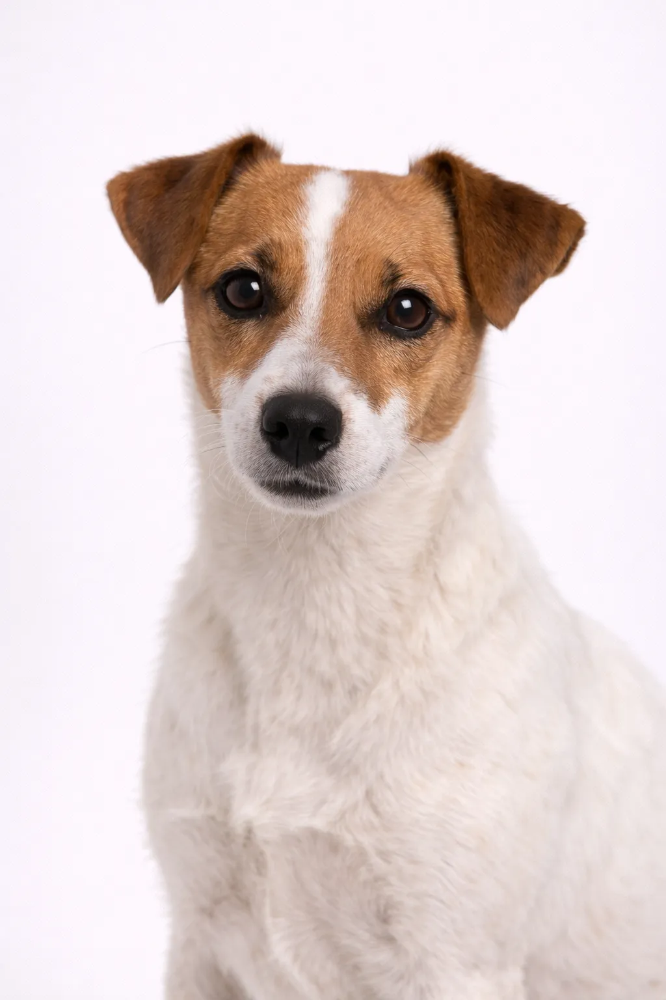

Jack Russell Terrier
En tant que Terrier énergique, Clever, athlétique de England, le Jack Russell Terrier a conquis de nombreux admirateurs dans le monde entier. Cette race de taille petit allie caractère et loyauté.
10-12 in
13-18 lbs
Évaluations de la Race
Tempérament
Aperçu
En tant que Terrier énergique, Clever, athlétique de England, le Jack Russell Terrier a conquis de nombreux admirateurs dans le monde entier. Cette race de taille petit allie caractère et loyauté.
Tempérament
Le Jack Russell Terrier est énergique et Clever. Cette race est connue pour son caractère équilibré et forme des liens forts avec sa famille. Avec une socialisation et un dressage appropriés, ils deviennent des compagnons loyaux et affectueux.
Santé
Le Jack Russell Terrier a une espérance de vie de 12-14 ans. Comme beaucoup de races de cette taille, ils peuvent être sujets à luxation de la rotule, problèmes dentaires et maladies oculaires. Des visites vétérinaires régulières et une alimentation équilibrée sont importantes pour une vie longue et saine.
Exercice
Le Jack Russell Terrier est une race très énergique qui nécessite au moins 60-90 minutes d'exercice quotidien. Les longues promenades, la course et les jeux actifs sont idéaux. Sans suffisamment d'exercice physique et mental, des problèmes de comportement peuvent survenir.
⦿ Cette Race Est-Elle Faite Pour Vous ?
✓ Idéal Pour
- Very active owners
- Those wanting a spirited companion
- Experienced terrier owners
- Homes without small pets
✗ Pas Idéal Pour
- Sedentary households
- Premiers propriétaires
- Foyers avec petits animaux
- Those wanting a calm lap dog
Notre Verdict : Le Jack Russell Terrier est un compagnon énergique et Clever pour la bonne famille. Avec des soins et un dressage appropriés, cette race devient un ami fidèle pour la vie.